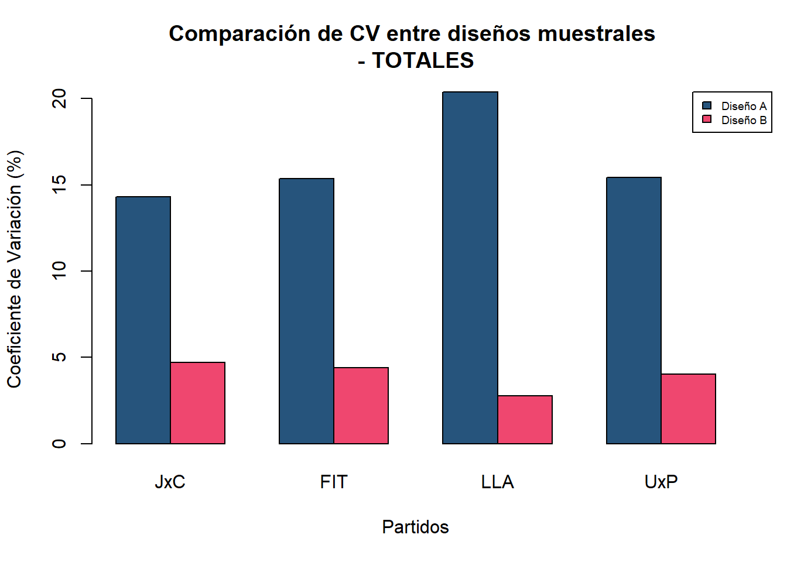
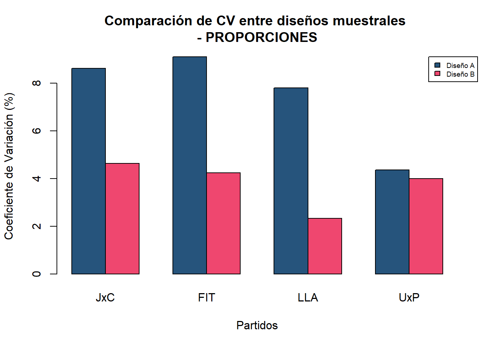

library(tidyverse)
library(survey)
library(readxl)
library(gt)
library(sampling)
library(VIM)
library(binom)
library(openxlsx)
library(DT)
library(stratification)
library(kableExtra)
options(scipen = 999)TP 3 - Final Muestreo Polietápico
Paquetes de trabajo
Elegiremos avanzar con el ejericicio 1A, a realizar con la base de votos de Octubre 2023, trabajando con voto a presidente, en el cual compararemos el efecto del tamaño de muestra en cada etapa en el CV.
Ejercicio 1A
El conjunto de mesas electorales de la elección Octubre 2023 será nuestro universo bajo estudio.
Se desea estimar el total de votos a Unión por la Patria, Juntos por el Cambio, La Libertad Avanza y FIT a Presidente y Vice a nivel nacional y proporción de votos respecto al total de votos positivos mediante una muestra aleatoria de mesas electorales.
Se compararán dos diseños, ambos bietápicos; con los circuitos electorales como Unidades de Primera Etapa (UPEs) y las mesas electorales como Unidades de Segunda Etapa (USEs).
Diseño A - Primer etapa de selección
Resultados_Octubre_2023_PRESIDENCIALES<-read_csv("Resultados_Octubre_2023_PRESIDENCIALES.csv")
glimpse(Resultados_Octubre_2023_PRESIDENCIALES)Rows: 1,045,200
Columns: 23
$ año <dbl> 2023, 2023, 2023, 2023, 2023, 2023, 2023, 202…
$ eleccion_tipo <chr> "GENERAL", "GENERAL", "GENERAL", "GENERAL", "…
$ recuento_tipo <chr> "PROVISORIO", "PROVISORIO", "PROVISORIO", "PR…
$ padron_tipo <chr> "NORMAL", "NORMAL", "NORMAL", "NORMAL", "NORM…
$ distrito_id <chr> "01", "01", "01", "01", "01", "01", "01", "01…
$ distrito_nombre <chr> "Ciudad Autónoma de Buenos Aires", "Ciudad Au…
$ seccionprovincial_id <dbl> NA, NA, NA, NA, NA, NA, NA, NA, NA, NA, NA, N…
$ seccionprovincial_nombre <chr> NA, NA, NA, NA, NA, NA, NA, NA, NA, NA, NA, N…
$ seccion_id <chr> "001", "001", "001", "001", "001", "001", "00…
$ seccion_nombre <chr> "Comuna 01", "Comuna 01", "Comuna 01", "Comun…
$ circuito_id <chr> "00001", "00001", "00001", "00001", "00001", …
$ circuito_nombre <chr> "00001", "00001", "00001", "00001", "00001", …
$ mesa_id <chr> "00001", "00001", "00001", "00001", "00001", …
$ mesa_tipo <chr> "NATIVOS", "NATIVOS", "NATIVOS", "NATIVOS", "…
$ mesa_electores <dbl> 345, 345, 345, 345, 345, 345, 345, 345, 345, …
$ cargo_id <dbl> 1, 1, 1, 1, 1, 1, 1, 1, 1, 1, 1, 1, 1, 1, 1, …
$ cargo_nombre <chr> "PRESIDENTE Y VICE", "PRESIDENTE Y VICE", "PR…
$ agrupacion_id <dbl> 134, 132, 135, 136, 133, 0, 0, 0, 0, 0, 134, …
$ agrupacion_nombre <chr> "UNION POR LA PATRIA", "JUNTOS POR EL CAMBIO"…
$ lista_numero <dbl> NA, NA, NA, NA, NA, 0, 0, 0, 0, 0, NA, NA, NA…
$ lista_nombre <lgl> NA, NA, NA, NA, NA, NA, NA, NA, NA, NA, NA, N…
$ votos_tipo <chr> "POSITIVO", "POSITIVO", "POSITIVO", "POSITIVO…
$ votos_cantidad <dbl> 96, 65, 44, 13, 4, 8, 3, 0, 0, 0, 102, 86, 38…Filtramos los datos para el cargo de “PRESIDENTE Y VICE” y creamos un marco de muestreo por estrato
#Filtramos los datos para el cargo "PRESIDENTE Y VICE"
presidenciales <- Resultados_Octubre_2023_PRESIDENCIALES %>%
filter(cargo_nombre == "PRESIDENTE Y VICE")
#Generar IDs
presidenciales$mesa_id_unico = paste(presidenciales$distrito_id, presidenciales$seccion_id, presidenciales$circuito_id, presidenciales$mesa_id)
presidenciales$circuito_id_unico = paste(presidenciales$distrito_id, presidenciales$seccion_id, presidenciales$circuito_id)
# Agrupamos los datos por distrito para conocer el número de mesas en cada estrato
mesas_por_distrito <- presidenciales %>%
group_by(distrito_nombre) %>%
summarise(mesas_totales = n_distinct(mesa_id_unico))
mesas_por_distrito# A tibble: 24 × 2
distrito_nombre mesas_totales
<chr> <int>
1 Buenos Aires 38074
2 Catamarca 1058
3 Chaco 2947
4 Chubut 1416
5 Ciudad Autónoma de Buenos Aires 7326
6 Corrientes 2760
7 Córdoba 9097
8 Entre Ríos 3432
9 Formosa 1484
10 Jujuy 1825
# ℹ 14 more rowsEstratificamos el marco de muestreo en estas zonas:CABA, Partidos del Conurbano Bonaerense, Resto de Buenos Aires, Región Pampeana (Córdoba, Santa Fé, La Pampa, Entre Ríos), NEA - NOA, Resto
#Primero, dado que los distritos no tienen diferenciado el conurbano del resto de la Provincia, filtramos las secciones en las cuales el distrito es Buenos Aires.
#Filtrar los datos para el distrito "Buenos Aires" y luego ver los valores únicos de seccion_nombre
unique(presidenciales %>%
filter(distrito_nombre == "Buenos Aires") %>%
pull(seccion_nombre)) [1] "Adolfo Alsina" "Alberti"
[3] "Almirante Brown" "Avellaneda"
[5] "Ayacucho" "Azul"
[7] "Bahía Blanca" "Balcarce"
[9] "Baradero" "Arrecifes"
[11] "Berazategui" "Berisso"
[13] "Bolívar" "Bragado"
[15] "Brandsen" "Campana"
[17] "Cañuelas" "Capitán Sarmiento"
[19] "Carlos Casares" "Carlos Tejedor"
[21] "Carmen de Areco" "Patagones"
[23] "Castelli" "Colón"
[25] "Coronel Dorrego" "Coronel Pringles"
[27] "Coronel de Marina L. Rosales" "Coronel Suárez"
[29] "Chacabuco" "Chascomús"
[31] "Chivilcoy" "Daireaux"
[33] "Dolores" "Ensenada"
[35] "Escobar" "Esteban Echeverría"
[37] "Exaltación de la Cruz" "Florencio Varela"
[39] "General Alvarado" "General Alvear"
[41] "General Arenales" "General Belgrano"
[43] "General Guido" "General La Madrid"
[45] "General Las Heras" "General Lavalle"
[47] "General Juan Madariaga" "General Paz"
[49] "General Pinto" "General Pueyrredón"
[51] "General Rodríguez" "General San Martín"
[53] "San Miguel" "General Viamonte"
[55] "General Villegas" "Adolfo Gonzales Chaves"
[57] "Guaminí" "Hipólito Yrigoyen"
[59] "Benito Juárez" "Junín"
[61] "La Matanza" "Lanús"
[63] "La Plata" "Laprida"
[65] "Las Flores" "Leandro N. Alem"
[67] "Lincoln" "Lobería"
[69] "Lobos" "Lomas de Zamora"
[71] "Luján" "Magdalena"
[73] "Maipú" "Mar Chiquita"
[75] "Marcos Paz" "Mercedes"
[77] "Merlo" "Monte"
[79] "Moreno" "Morón"
[81] "Navarro" "Necochea"
[83] "9 de Julio" "Olavarría"
[85] "Pehuajó" "Pellegrini"
[87] "Pergamino" "Pila"
[89] "Pilar" "Pinamar"
[91] "Puan" "Quilmes"
[93] "Ramallo" "Rauch"
[95] "Rivadavia" "Rojas"
[97] "Roque Pérez" "Saavedra"
[99] "Saladillo" "Salliqueló"
[101] "Salto" "San Andrés de Giles"
[103] "San Antonio de Areco" "San Cayetano"
[105] "San Fernando" "San Isidro"
[107] "San Nicolás" "San Pedro"
[109] "San Vicente" "Suipacha"
[111] "Tandil" "Tapalqué"
[113] "Tigre" "Tornquist"
[115] "Trenque Lauquen" "Tordillo"
[117] "Tres Arroyos" "Tres de Febrero"
[119] "La Costa" "Monte Hermoso"
[121] "25 de Mayo" "Vicente López"
[123] "Villa Gesell" "Villarino"
[125] "Zárate" "Tres Lomas"
[127] "Florentino Ameghino" "Presidente Perón"
[129] "José C. Paz" "Malvinas Argentinas"
[131] "Punta Indio" "Ezeiza"
[133] "Ituzaingó" "Hurlingham"
[135] "Lezama" conurbano_bonaerense <- c("La Matanza", "Lomas de Zamora", "Quilmes", "Avellaneda", "Morón", "Tres de Febrero",
"Lanús", "Almirante Brown", "San Fernando", "San Isidro", "San Miguel",
"Florencio Varela", "Berazategui", "Hurlingham", "Ituzaingó", "Moreno",
"Merlo", "Tigre", "Varela", "Almirante Brown", "San Vicente", "La Plata", "Vicente López")# Estratificación y modificación de la columna 'estrato'
presidenciales <- presidenciales %>%
mutate(estrato = case_when(
distrito_nombre == "Ciudad Autónoma de Buenos Aires" ~ "CABA",
distrito_nombre == "Buenos Aires" & seccion_nombre %in% conurbano_bonaerense ~ "Partidos del Conurbano Bonaerense",
distrito_nombre == "Buenos Aires" & !(seccion_nombre %in% conurbano_bonaerense) ~ "Resto de Buenos Aires",
distrito_nombre %in% c("Córdoba", "Santa Fe", "La Pampa", "Entre Ríos") ~ "Región Pampeana",
distrito_nombre %in% c("Chaco", "Jujuy", "Salta", "Tucumán", "Misiones", "Formosa", "Santiago del Estero", "Catamarca", "Corrientes") ~ "NEA - NOA",
TRUE ~ "Resto"
))
table(presidenciales$estrato)
CABA NEA - NOA
73260 226260
Partidos del Conurbano Bonaerense Región Pampeana
209090 217630
Resto Resto de Buenos Aires
147310 171650 Asignación de la muestra por estrato en forma proporcional
El ejercicio indica una muestra aleatoria, estratificada, de 80 UPEs, estratificando el marco de muestreo en estas zonas: CABA, Partidos del Conurbano Bonaerense, Resto de Buenos Aires Región Pampeana (Córdoba, Santa Fé, La Pampa, Entre Ríos), NEA - NOA, Resto.
Para poder realizar la asignacion de la muestra debemos, calcular el total de mesas electorales en cada estrato, calcular la proporción de mesas de cada estrato sobre el total de mesas y asignar la cantidad de UPEs a cada estrato proporcionalmente.
# Calculamos el total de mesas por estrato
mesas_por_estrato <- presidenciales %>%
group_by(estrato) %>%
summarise(total_mesas = n_distinct(mesa_id_unico))
mesas_por_estrato# A tibble: 6 × 2
estrato total_mesas
<chr> <int>
1 CABA 7326
2 NEA - NOA 22626
3 Partidos del Conurbano Bonaerense 20909
4 Región Pampeana 21763
5 Resto 14731
6 Resto de Buenos Aires 17165# Calculamos la proporción de mesas por estrato
total_mesas_totales <- sum(mesas_por_estrato$total_mesas)
mesas_por_estrato <- mesas_por_estrato %>%
mutate(proporcion_mesas = total_mesas / total_mesas_totales)
#Asignamos el número de UPEs de manera proporcional (80 UPEs en total)
total_UPEs <- 80
mesas_por_estrato <- mesas_por_estrato %>%
mutate(UPE_asignadas = round(proporcion_mesas * total_UPEs))
mesas_por_estrato# A tibble: 6 × 4
estrato total_mesas proporcion_mesas UPE_asignadas
<chr> <int> <dbl> <dbl>
1 CABA 7326 0.0701 6
2 NEA - NOA 22626 0.216 17
3 Partidos del Conurbano Bonaerense 20909 0.200 16
4 Región Pampeana 21763 0.208 17
5 Resto 14731 0.141 11
6 Resto de Buenos Aires 17165 0.164 13Se asignaron 6 UPE a CABA, 17 a NEA-NOA, 16 a Partidos del Conurbano Bonaeresme, 17 a Region Pampeana, 11 a Resto y 13 a Resto de Buenos Aires.
Selección de circuitos en cada estrato mediante MAS
Para realizar un MAS, debemos primero filtrar los datos por estrato y seleccionar de manera aleatoria los circuitos según la cantidad de UPEs asignadas.
Primero agregamos la columna UPE_asignadas a la tabla presidenciales
presidenciales <- presidenciales %>%
left_join(mesas_por_estrato %>% select(estrato, UPE_asignadas), by = "estrato")
glimpse(presidenciales)Rows: 1,045,200
Columns: 27
$ año <dbl> 2023, 2023, 2023, 2023, 2023, 2023, 2023, 202…
$ eleccion_tipo <chr> "GENERAL", "GENERAL", "GENERAL", "GENERAL", "…
$ recuento_tipo <chr> "PROVISORIO", "PROVISORIO", "PROVISORIO", "PR…
$ padron_tipo <chr> "NORMAL", "NORMAL", "NORMAL", "NORMAL", "NORM…
$ distrito_id <chr> "01", "01", "01", "01", "01", "01", "01", "01…
$ distrito_nombre <chr> "Ciudad Autónoma de Buenos Aires", "Ciudad Au…
$ seccionprovincial_id <dbl> NA, NA, NA, NA, NA, NA, NA, NA, NA, NA, NA, N…
$ seccionprovincial_nombre <chr> NA, NA, NA, NA, NA, NA, NA, NA, NA, NA, NA, N…
$ seccion_id <chr> "001", "001", "001", "001", "001", "001", "00…
$ seccion_nombre <chr> "Comuna 01", "Comuna 01", "Comuna 01", "Comun…
$ circuito_id <chr> "00001", "00001", "00001", "00001", "00001", …
$ circuito_nombre <chr> "00001", "00001", "00001", "00001", "00001", …
$ mesa_id <chr> "00001", "00001", "00001", "00001", "00001", …
$ mesa_tipo <chr> "NATIVOS", "NATIVOS", "NATIVOS", "NATIVOS", "…
$ mesa_electores <dbl> 345, 345, 345, 345, 345, 345, 345, 345, 345, …
$ cargo_id <dbl> 1, 1, 1, 1, 1, 1, 1, 1, 1, 1, 1, 1, 1, 1, 1, …
$ cargo_nombre <chr> "PRESIDENTE Y VICE", "PRESIDENTE Y VICE", "PR…
$ agrupacion_id <dbl> 134, 132, 135, 136, 133, 0, 0, 0, 0, 0, 134, …
$ agrupacion_nombre <chr> "UNION POR LA PATRIA", "JUNTOS POR EL CAMBIO"…
$ lista_numero <dbl> NA, NA, NA, NA, NA, 0, 0, 0, 0, 0, NA, NA, NA…
$ lista_nombre <lgl> NA, NA, NA, NA, NA, NA, NA, NA, NA, NA, NA, N…
$ votos_tipo <chr> "POSITIVO", "POSITIVO", "POSITIVO", "POSITIVO…
$ votos_cantidad <dbl> 96, 65, 44, 13, 4, 8, 3, 0, 0, 0, 102, 86, 38…
$ mesa_id_unico <chr> "01 001 00001 00001", "01 001 00001 00001", "…
$ circuito_id_unico <chr> "01 001 00001", "01 001 00001", "01 001 00001…
$ estrato <chr> "CABA", "CABA", "CABA", "CABA", "CABA", "CABA…
$ UPE_asignadas <dbl> 6, 6, 6, 6, 6, 6, 6, 6, 6, 6, 6, 6, 6, 6, 6, …str(presidenciales$UPE_asignadas) # Comprobar el tipo de datos de la columna UPE_asignadas num [1:1045200] 6 6 6 6 6 6 6 6 6 6 ...head(presidenciales$UPE_asignadas) # Verificar los primeros valores[1] 6 6 6 6 6 6summary(presidenciales$UPE_asignadas) # Ver resumen de la columna Min. 1st Qu. Median Mean 3rd Qu. Max.
6.00 13.00 16.00 14.53 17.00 17.00 presidenciales %>%
filter(is.na(UPE_asignadas)) # Ver filas con UPE_asignadas NA# A tibble: 0 × 27
# ℹ 27 variables: año <dbl>, eleccion_tipo <chr>, recuento_tipo <chr>,
# padron_tipo <chr>, distrito_id <chr>, distrito_nombre <chr>,
# seccionprovincial_id <dbl>, seccionprovincial_nombre <chr>,
# seccion_id <chr>, seccion_nombre <chr>, circuito_id <chr>,
# circuito_nombre <chr>, mesa_id <chr>, mesa_tipo <chr>,
# mesa_electores <dbl>, cargo_id <dbl>, cargo_nombre <chr>,
# agrupacion_id <dbl>, agrupacion_nombre <chr>, lista_numero <dbl>, …Con esto sabemos que la columna UPE_asignadas es numérica, que su valor mínimo es 6, el valor máximo es 17 y no hay valores faltantes en la columna UPE_asignadas.
Procederemos ahora a seleccionar las UPEs de manera aleatoria en cada estrato mediante Muestreo Aleatorio Simple (MAS)
base_mesas <-presidenciales %>%
group_by(estrato, circuito_id_unico ,mesa_id_unico ,agrupacion_nombre) %>%
summarise(Voto = sum(votos_cantidad,na.rm = TRUE))%>%
pivot_wider(names_from = agrupacion_nombre,
values_from = Voto) %>%
ungroup()
set.seed(1234) # Para reproducibilidad
# total de mesas por estrato en el dataframe 'marco_circuitos'
marco_circuitos <- presidenciales %>%
group_by(estrato, circuito_id_unico) %>%
summarize(total_mesas = n_distinct(mesa_id_unico), .groups = "drop")
# columna 'UPE_asignadas' en el marco de circuitos
marco_circuitos_con_asignacion <- marco_circuitos %>%
left_join(presidenciales %>%
group_by(estrato) %>%
summarize(UPE_asignadas = first(UPE_asignadas)), by = "estrato")
# Ahora realizamos la selección de UPEs
marco_circuitos_con_asignacion <- marco_circuitos_con_asignacion[order(marco_circuitos_con_asignacion$estrato),]
smplCircuitos <- sampling::strata(data=marco_circuitos_con_asignacion, stratanames = "estrato",
size=mesas_por_estrato$UPE_asignadas,
method="srswor")
muestra_circuitos <- getdata(marco_circuitos_con_asignacion, smplCircuitos)
muestra_circuitos$F1 <- 1/muestra_circuitos$Prob
# Verificar las primeras filas del resultado
kable(head(muestra_circuitos))| circuito_id_unico | total_mesas | UPE_asignadas | estrato | ID_unit | Prob | Stratum | F1 | |
|---|---|---|---|---|---|---|---|---|
| 28 | 01 002 00028 | 50 | 6 | CABA | 28 | 0.0359281 | 1 | 27.83333 |
| 80 | 01 007 00080 | 38 | 6 | CABA | 80 | 0.0359281 | 1 | 27.83333 |
| 101 | 01 009 00101 | 50 | 6 | CABA | 101 | 0.0359281 | 1 | 27.83333 |
| 111 | 01 010 00111 | 33 | 6 | CABA | 111 | 0.0359281 | 1 | 27.83333 |
| 137 | 01 013 00137 | 40 | 6 | CABA | 137 | 0.0359281 | 1 | 27.83333 |
| 150 | 01 014 00150 | 38 | 6 | CABA | 150 | 0.0359281 | 1 | 27.83333 |
# Verificar tamaño de muestra por estrato
kable(table(muestra_circuitos$estrato))| Var1 | Freq |
|---|---|
| CABA | 6 |
| NEA - NOA | 17 |
| Partidos del Conurbano Bonaerense | 16 |
| Región Pampeana | 17 |
| Resto | 11 |
| Resto de Buenos Aires | 13 |
Diseño A - Segunda etapa de selección
En cada circuito se seleccionan 12 mesas electorales mediante muestreo aleatorio simple (o todas las que haya de haber menos),
a. Cuántos circuitos y mesas electorales hay en cada estrato?
# Contamos los circuitos y mesas por estrato
resumen_estratos <- presidenciales %>%
group_by(estrato) %>%
summarise(
circuitos = n_distinct(circuito_id_unico), # Número de circuitos
mesas_electorales = n_distinct(mesa_id_unico) # Número de mesas electorales
)
kable(resumen_estratos, caption = "Resumen de Circuitos y Mesas Electorales por Estrato")| estrato | circuitos | mesas_electorales |
|---|---|---|
| CABA | 167 | 7326 |
| NEA - NOA | 1783 | 22626 |
| Partidos del Conurbano Bonaerense | 281 | 20909 |
| Región Pampeana | 1562 | 21763 |
| Resto | 1193 | 14731 |
| Resto de Buenos Aires | 766 | 17165 |
b. Presentar en un tabulado el total de votos a UxP, JxC, LLA y FIT a nivel nacional y la proporción de votos respecto al total de votos positivos
unique(presidenciales$agrupacion_nombre)[1] "UNION POR LA PATRIA"
[2] "JUNTOS POR EL CAMBIO"
[3] "LA LIBERTAD AVANZA"
[4] "FRENTE DE IZQUIERDA Y DE TRABAJADORES - UNIDAD"
[5] "HACEMOS POR NUESTRO PAIS"
[6] NA totalVotosPositivos <- presidenciales %>%
filter(votos_tipo == "POSITIVO") %>%
summarise(totalVotosPositivos = sum(votos_cantidad, na.rm = TRUE))
kable(totalVotosPositivos)| totalVotosPositivos |
|---|
| 26291718 |
votos_partido<-presidenciales %>%
filter(votos_tipo=="POSITIVO") %>%
group_by(agrupacion_nombre) %>%
summarise(votos_agrupacion= sum(votos_cantidad),
proporcion= round(votos_agrupacion/totalVotosPositivos*100,1))
kable(votos_partido, caption = "Proporción de votos por partido (valor poblacional)")| agrupacion_nombre | votos_agrupacion | proporcion |
|---|---|---|
| FRENTE DE IZQUIERDA Y DE TRABAJADORES - UNIDAD | 709932 | 2.7 |
| HACEMOS POR NUESTRO PAIS | 1784315 | 6.8 |
| JUNTOS POR EL CAMBIO | 6267152 | 23.8 |
| LA LIBERTAD AVANZA | 7884336 | 30.0 |
| UNION POR LA PATRIA | 9645983 | 36.7 |
Seleccionar una muestra con este diseño (MAS)
# Calculo el total de circuitos por estrato (UPE - fpc1)
# y la cantidad de mesas por circuito (USE - fpc2)
# Lo agrego al marco muestral total que es el df presidenciales
presidenciales <- presidenciales %>%
group_by(estrato) %>%
mutate(fpc1 = n_distinct(circuito_id_unico)) %>%
ungroup()
presidenciales <- presidenciales %>%
group_by(estrato, circuito_id_unico) %>%
mutate(fpc2 = n_distinct(mesa_id_unico)) %>%
ungroup()# Genero n (UPE seleccionadas) y m (USE seleccionadas), con los tamanos de muestra en cada etapa
n <- 80
m <- 12#De las UPE seleccionadas (circuitos) selecciono 12 mesas por cada circuito por MAS
marco_mesas <- merge(base_mesas, muestra_circuitos[, c( "circuito_id_unico","F1")],
by= "circuito_id_unico")
marco_mesas <- merge(marco_mesas, presidenciales[!duplicated(presidenciales$circuito_id_unico), c( "circuito_id_unico","fpc1","fpc2")],
by= "circuito_id_unico")
# Ordeno por estrato
marco_mesas <- marco_mesas[order(marco_mesas$circuito_id_unico), ]
tabla_estratos2 <- marco_mesas %>%
group_by(circuito_id_unico) %>%
summarise(nh = m, # Número de unidades a seleccionar (12 por circuito)
fpc2 = n_distinct(mesa_id_unico)) %>% # Cantidad de mesas por circuito (número de mesas distintas)
mutate(nh = ifelse(nh > fpc2, fpc2, nh))
tabla_estratos2 <- tabla_estratos2[order(tabla_estratos2$circuito_id_unico), ]# Selecciono muestra mesas
set.seed(1234)
smplMesas <- sampling::strata(data=marco_mesas, stratanames = "circuito_id_unico",
size=tabla_estratos2$nh,
method="srswor")
muestra_mesas <- getdata(marco_mesas, smplMesas)
muestra_mesas$F2 <- 1/muestra_mesas$Prob
muestra_mesas$pondera <- muestra_mesas$F1 * muestra_mesas$F2
muestra_mesas$TOTAL_VOTOS_POSITIVOS = muestra_mesas$`FRENTE DE IZQUIERDA Y DE TRABAJADORES - UNIDAD` + muestra_mesas$`HACEMOS POR NUESTRO PAIS` + muestra_mesas$`JUNTOS POR EL CAMBIO` + muestra_mesas$`LA LIBERTAD AVANZA`+muestra_mesas$`UNION POR LA PATRIA`Declarar el diseño de muestreo a survey (declarar ambas etapas de selección) y con survey estimar los totales y proporciones pedidas, junto a sus CV, IC(90%) y deff (en el caso de proporciones no es necesario calcular el deff)
# Declaro diseño
diseno <- svydesign(id=~circuito_id_unico + mesa_id_unico, strata=~estrato, weights = ~pondera, fpc=~fpc1+fpc2, data=muestra_mesas, nest = TRUE) # Añadir nest=TRUE)
#jxc
total_jxc <- svytotal(~`JUNTOS POR EL CAMBIO`, diseno, na.rm=TRUE, cv=TRUE, deff=TRUE)
prop_jxc <- svyratio(numerator = ~`JUNTOS POR EL CAMBIO`, denominator = ~TOTAL_VOTOS_POSITIVOS, diseno, deff=TRUE)
#FIT
total_FIT <- svytotal(~`FRENTE DE IZQUIERDA Y DE TRABAJADORES - UNIDAD`, diseno, na.rm=TRUE, cv=TRUE, deff=TRUE)
prop_FIT <- svyratio(numerator = ~`FRENTE DE IZQUIERDA Y DE TRABAJADORES - UNIDAD`, denominator = ~TOTAL_VOTOS_POSITIVOS, diseno, deff=TRUE)
#LLA
total_LLA <- svytotal(~`LA LIBERTAD AVANZA`, diseno, na.rm=TRUE, cv=TRUE, deff=TRUE)
prop_LLA <- svyratio(numerator = ~`LA LIBERTAD AVANZA`, denominator = ~TOTAL_VOTOS_POSITIVOS, diseno, deff=TRUE)
#UNION POR LA PATRIA
total_UxP <- svytotal(~`UNION POR LA PATRIA`, diseno, na.rm=TRUE, cv=TRUE, deff=TRUE)
prop_UxP <- svyratio(numerator = ~`UNION POR LA PATRIA`, denominator = ~TOTAL_VOTOS_POSITIVOS, diseno, deff=TRUE)Presentar en dos tablas (una para los totales , otra para las proporciones) los resultados
totales_estim_disA <- data.frame(Agrupacion = c("JUNTOS POR EL CAMBIO",
"FRENTE DE IZQUIERDA Y DE TRABAJADORES - UNIDAD",
"LA LIBERTAD AVANZA",
"UNION POR LA PATRIA"),
Total = c(total_jxc[1],total_FIT[1],total_LLA[1],total_UxP[1]),
CI_li = c(confint(total_jxc, level = 0.9)[1],
confint(total_FIT, level = 0.9)[1],
confint(total_LLA, level = 0.9)[1],
confint(total_UxP, level = 0.9)[1]),
CI_ls = c(confint(total_jxc, level = 0.9)[2],
confint(total_FIT, level = 0.9)[2],
confint(total_LLA, level = 0.9)[2],
confint(total_UxP, level = 0.9)[2]),
CV = c(cv(total_jxc),cv(total_FIT),cv(total_LLA),cv(total_UxP)),
Deff = c(deff(total_jxc),deff(total_FIT),deff(total_LLA),deff(total_UxP)))
rownames(totales_estim_disA) = NULL
kable(totales_estim_disA)| Agrupacion | Total | CI_li | CI_ls | CV | Deff |
|---|---|---|---|---|---|
| JUNTOS POR EL CAMBIO | 5711100.0 | 4368860.0 | 7053340.0 | 0.1428839 | 36.32917 |
| FRENTE DE IZQUIERDA Y DE TRABAJADORES - UNIDAD | 635032.4 | 474734.2 | 795330.6 | 0.1534636 | 22.10408 |
| LA LIBERTAD AVANZA | 7841244.0 | 5212710.0 | 10469778.0 | 0.2037987 | 148.78316 |
| UNION POR LA PATRIA | 9569166.6 | 7143714.6 | 11994618.6 | 0.1540960 | 75.15467 |
props_estim_disA <- data.frame(Agrupacion = c("JUNTOS POR EL CAMBIO",
"FRENTE DE IZQUIERDA Y DE TRABAJADORES - UNIDAD",
"LA LIBERTAD AVANZA",
"UNION POR LA PATRIA"),
prop = c(prop_jxc$ratio,prop_FIT$ratio,prop_LLA$ratio,prop_UxP$ratio),
CI_li = c(confint(prop_jxc, level = 0.9)[1],
confint(prop_FIT, level = 0.9)[1],
confint(prop_LLA, level = 0.9)[1],
confint(prop_UxP, level = 0.9)[1]),
CI_ls = c(confint(prop_jxc, level = 0.9)[2],
confint(prop_FIT, level = 0.9)[2],
confint(prop_LLA, level = 0.9)[2],
confint(prop_UxP, level = 0.9)[2]),
CV = c(cv(prop_jxc),cv(prop_FIT),cv(prop_LLA),cv(prop_UxP)))
rownames(props_estim_disA) = NULL
kable(props_estim_disA)| Agrupacion | prop | CI_li | CI_ls | CV |
|---|---|---|---|---|
| JUNTOS POR EL CAMBIO | 0.2259208 | 0.1938566 | 0.2579849 | 0.0862852 |
| FRENTE DE IZQUIERDA Y DE TRABAJADORES - UNIDAD | 0.0251207 | 0.0213566 | 0.0288849 | 0.0910983 |
| LA LIBERTAD AVANZA | 0.3101854 | 0.2704029 | 0.3499679 | 0.0779728 |
| UNION POR LA PATRIA | 0.3785389 | 0.3513783 | 0.4056994 | 0.0436215 |
Los intervalos de confianza al 90% contienen a los parámetros poblacionales?
#Chequear si los IC cubren al parametro
totales_chequeo_disA = merge(totales_estim_disA, votos_partido[, c("agrupacion_nombre", "votos_agrupacion")], by.x = "Agrupacion", by.y = "agrupacion_nombre")
totales_chequeo_disA$Cubre_param = totales_chequeo_disA$CI_li <= totales_chequeo_disA$votos_agrupacion &
totales_chequeo_disA$CI_ls >= totales_chequeo_disA$votos_agrupacion
totales_chequeo_disA[, c("Agrupacion","Cubre_param")] Agrupacion Cubre_param
1 FRENTE DE IZQUIERDA Y DE TRABAJADORES - UNIDAD TRUE
2 JUNTOS POR EL CAMBIO TRUE
3 LA LIBERTAD AVANZA TRUE
4 UNION POR LA PATRIA TRUEprops_chequeo_disA = merge(props_estim_disA, votos_partido[, c("agrupacion_nombre", "proporcion")], by.x = "Agrupacion", by.y = "agrupacion_nombre")
props_chequeo_disA$Cubre_param = props_chequeo_disA$CI_li <= props_chequeo_disA$proporcion &
props_chequeo_disA$CI_ls >= props_chequeo_disA$proporcion
props_chequeo_disA[, c("Agrupacion" ,"Cubre_param")] Agrupacion totalVotosPositivos
1 FRENTE DE IZQUIERDA Y DE TRABAJADORES - UNIDAD FALSE
2 JUNTOS POR EL CAMBIO FALSE
3 LA LIBERTAD AVANZA FALSE
4 UNION POR LA PATRIA FALSELos intervalos de confianza contienen a los parámetros poblacionales en todos los casos En cuanto a las diferencias entre los partidos puede afirmarse con un 90% de confianza que las proporciones de votos para cada partido difieren entre sí, es decir que Unión por la Patria es el partido con mayor porcentaje de votos, seguido por la libertad avanza, luego juntos por el cambio y finalmente el FIT, dado que los intervalos de confianza para estos valores no se solapan.En cambio al observar los totales, los intervalos de confianza de los 3 partidos con más votos sí se solapan y también se observa que los coeficientes de variación son mayors (aunque sólo el de LLA supera ligeramente el 20%).
Diseño B
# Calculamos el total de mesas por estrato
mesas_por_circuito <- presidenciales %>%
group_by(estrato, circuito_id_unico) %>%
summarise(total_mesas_circuito = n_distinct(mesa_id_unico))
mesas_por_circuito <- merge(mesas_por_circuito, presidenciales[!duplicated(presidenciales$circuito_id_unico), c( "circuito_id_unico","UPE_asignadas", "distrito_id", "seccion_id", "circuito_id")], by= "circuito_id_unico")
mesas_por_circuito <- merge(mesas_por_circuito, mesas_por_estrato[, c("estrato", "total_mesas")], by = "estrato")
# Genero probabilidad de seleccion
mesas_por_circuito$pik <- mesas_por_circuito$UPE_asignadas * mesas_por_circuito$total_mesas_circuito / mesas_por_circuito$total_mesas
max(mesas_por_circuito$pik)[1] 0.325984Hay circuitos autorepresentados en algún estrato?
No hay ningún circuito con probabilidad uno en ningún estrato
Seleccionar una muestra con este diseño
#Ordeno el marco
mesas_por_circuito <- mesas_por_circuito[order(mesas_por_circuito$estrato, mesas_por_circuito$distrito_id, mesas_por_circuito$seccion_id, mesas_por_circuito$circuito_id),]
set.seed(12345)
smplCircuitosB <- sampling::strata(data=mesas_por_circuito, stratanames = "estrato",
size=mesas_por_circuito$UPE_asignadas[!duplicated(mesas_por_circuito$estrato)],
pik=mesas_por_circuito$pik,
method="systematic")
muestra_circuitosB <- getdata(mesas_por_circuito, smplCircuitosB)
muestra_circuitosB$F1 <- 1/muestra_circuitosB$Prob
# Verificar las primeras filas del resultado
head(muestra_circuitosB) circuito_id_unico total_mesas_circuito UPE_asignadas distrito_id seccion_id
28 01 002 00028 50 6 01 002
63 01 005 00063 56 6 01 005
87 01 008 00087 97 6 01 008
111 01 010 00111 33 6 01 010
137 01 013 00137 40 6 01 013
160 01 015 00160 66 6 01 015
circuito_id total_mesas pik estrato ID_unit Prob Stratum
28 00028 7326 0.04095004 CABA 28 0.04095004 1
63 00063 7326 0.04586405 CABA 63 0.04586405 1
87 00087 7326 0.07944308 CABA 87 0.07944308 1
111 00111 7326 0.02702703 CABA 111 0.02702703 1
137 00137 7326 0.03276003 CABA 137 0.03276003 1
160 00160 7326 0.05405405 CABA 160 0.05405405 1
F1
28 24.42000
63 21.80357
87 12.58763
111 37.00000
137 30.52500
160 18.50000# Verificar tamaño de muestra por estrato
table(muestra_circuitosB$estrato)
CABA NEA - NOA
6 17
Partidos del Conurbano Bonaerense Región Pampeana
16 17
Resto Resto de Buenos Aires
11 13 #De las UPE seleccionadas (circuitos) selecciono 12 mesas por cada circuito por MAS
marco_mesasB <- merge(base_mesas, muestra_circuitosB[, c( "circuito_id_unico","F1")],
by= "circuito_id_unico")
marco_mesasB <- marco_mesasB[order(marco_mesasB$circuito_id_unico), ]
tabla_estratos_disB <- marco_mesasB %>%
group_by(circuito_id_unico) %>%
summarise(nh = m, # Número de unidades a seleccionar (12 por circuito)
fpc2 = n_distinct(mesa_id_unico)) %>% # Cantidad de mesas por circuito (número de mesas distintas)
mutate(nh = ifelse(nh > fpc2, fpc2, nh))
tabla_estratos_disB <- tabla_estratos_disB[order(tabla_estratos_disB$circuito_id_unico), ]
# Selecciono muestra mesas
set.seed(12345)
smplMesasB <- sampling::strata(data=marco_mesasB, stratanames = "circuito_id_unico",
size=tabla_estratos_disB$nh,
method="srswor")
muestra_mesasB <- getdata(marco_mesasB, smplMesasB)
muestra_mesasB$F2 <- 1/muestra_mesasB$Prob
muestra_mesasB$pondera <- muestra_mesasB$F1 * muestra_mesasB$F2
muestra_mesasB$TOTAL_VOTOS_POSITIVOS = muestra_mesasB$`FRENTE DE IZQUIERDA Y DE TRABAJADORES - UNIDAD` + muestra_mesasB$`HACEMOS POR NUESTRO PAIS` + muestra_mesasB$`JUNTOS POR EL CAMBIO` + muestra_mesasB$`LA LIBERTAD AVANZA`+muestra_mesasB$`UNION POR LA PATRIA`Declarar el diseño de muestreo a survey (ahora solo la primera etapa se declara, sin el fcp)
# Declaro diseño
disenoB <- svydesign(id=~circuito_id_unico , strata=~estrato, weights = ~pondera, data=muestra_mesasB) # Añadir nest=TRUE)Con survey estimar los totales y proporciones pedidas, junto a sus CV, IC(90%) y deff
#jxc
total_jxc_B <- svytotal(~`JUNTOS POR EL CAMBIO`, disenoB, na.rm=TRUE, cv=TRUE, deff=TRUE)
prop_jxc_B <- svyratio(numerator = ~`JUNTOS POR EL CAMBIO`, denominator = ~TOTAL_VOTOS_POSITIVOS, disenoB, deff=TRUE)
#FIT
total_FIT_B <- svytotal(~`FRENTE DE IZQUIERDA Y DE TRABAJADORES - UNIDAD`, disenoB, na.rm=TRUE, cv=TRUE, deff=TRUE)
prop_FIT_B <- svyratio(numerator = ~`FRENTE DE IZQUIERDA Y DE TRABAJADORES - UNIDAD`, denominator = ~TOTAL_VOTOS_POSITIVOS, disenoB, deff=TRUE)
#LLA
total_LLA_B <- svytotal(~`LA LIBERTAD AVANZA`, disenoB, na.rm=TRUE, cv=TRUE, deff=TRUE)
prop_LLA_B <- svyratio(numerator = ~`LA LIBERTAD AVANZA`, denominator = ~TOTAL_VOTOS_POSITIVOS, disenoB, deff=TRUE)
#UNION POR LA PATRIA
total_UxP_B <- svytotal(~`UNION POR LA PATRIA`, disenoB, na.rm=TRUE, cv=TRUE, deff=TRUE)
prop_UxP_B <- svyratio(numerator = ~`UNION POR LA PATRIA`, denominator = ~TOTAL_VOTOS_POSITIVOS, disenoB, deff=TRUE)Presentar en dos tablas (una para los totales, otra para las proporciones) los resultados
totales_estim_disB <- data.frame(Agrupacion = c("JUNTOS POR EL CAMBIO",
"FRENTE DE IZQUIERDA Y DE TRABAJADORES - UNIDAD",
"LA LIBERTAD AVANZA",
"UNION POR LA PATRIA"),
Total = c(total_jxc_B[1],total_FIT_B[1],total_LLA_B[1],total_UxP_B[1]),
CI_li = c(confint(total_jxc_B, level = 0.9)[1],
confint(total_FIT_B, level = 0.9)[1],
confint(total_LLA_B, level = 0.9)[1],
confint(total_UxP_B, level = 0.9)[1]),
CI_ls = c(confint(total_jxc_B, level = 0.9)[2],
confint(total_FIT_B, level = 0.9)[2],
confint(total_LLA_B, level = 0.9)[2],
confint(total_UxP_B, level = 0.9)[2]),
CV = c(cv(total_jxc_B),cv(total_FIT_B),cv(total_LLA_B),cv(total_UxP_B)),
Deff = c(deff(total_jxc_B),deff(total_FIT_B),deff(total_LLA_B),deff(total_UxP_B)))
rownames(totales_estim_disB) = NULL
kable(totales_estim_disB)| Agrupacion | Total | CI_li | CI_ls | CV | Deff |
|---|---|---|---|---|---|
| JUNTOS POR EL CAMBIO | 6209221.2 | 5728949.6 | 6689492.9 | 0.0470243 | 7.799828 |
| FRENTE DE IZQUIERDA Y DE TRABAJADORES - UNIDAD | 698304.9 | 647803.4 | 748806.4 | 0.0439675 | 3.436188 |
| LA LIBERTAD AVANZA | 8045818.2 | 7678125.4 | 8413511.0 | 0.0277835 | 5.775325 |
| UNION POR LA PATRIA | 9672573.6 | 9031129.1 | 10314018.0 | 0.0403171 | 6.773330 |
props_estim_disB <- data.frame(Agrupacion = c("JUNTOS POR EL CAMBIO",
"FRENTE DE IZQUIERDA Y DE TRABAJADORES - UNIDAD",
"LA LIBERTAD AVANZA",
"UNION POR LA PATRIA"),
prop = c(prop_jxc_B$ratio,prop_FIT_B$ratio,prop_LLA_B$ratio,prop_UxP_B$ratio),
CI_li = c(confint(prop_jxc_B, level = 0.9)[1],
confint(prop_FIT_B, level = 0.9)[1],
confint(prop_LLA_B, level = 0.9)[1],
confint(prop_UxP_B, level = 0.9)[1]),
CI_ls = c(confint(prop_jxc_B, level = 0.9)[2],
confint(prop_FIT_B, level = 0.9)[2],
confint(prop_LLA_B, level = 0.9)[2],
confint(prop_UxP_B, level = 0.9)[2]),
CV = c(cv(prop_jxc_B),cv(prop_FIT_B),cv(prop_LLA_B),cv(prop_UxP_B)))
rownames(props_estim_disB) = NULL
kable(props_estim_disB)| Agrupacion | prop | CI_li | CI_ls | CV |
|---|---|---|---|---|
| JUNTOS POR EL CAMBIO | 0.2353029 | 0.2173614 | 0.2532444 | 0.0463558 |
| FRENTE DE IZQUIERDA Y DE TRABAJADORES - UNIDAD | 0.0264628 | 0.0246157 | 0.0283098 | 0.0424345 |
| LA LIBERTAD AVANZA | 0.3049021 | 0.2931784 | 0.3166257 | 0.0233762 |
| UNION POR LA PATRIA | 0.3665491 | 0.3424258 | 0.3906724 | 0.0400108 |
Los intervalos de confianza al 90% contienen a los parámetros poblacionales?
#Chequear si los IC cubren al parametro
totales_chequeo_disB = merge(totales_estim_disB, votos_partido[, c("agrupacion_nombre", "votos_agrupacion")], by.x = "Agrupacion", by.y = "agrupacion_nombre")
totales_chequeo_disB$Cubre_param = totales_chequeo_disB$CI_li <= totales_chequeo_disB$votos_agrupacion &
totales_chequeo_disB$CI_ls >= totales_chequeo_disB$votos_agrupacion
totales_chequeo_disB[, c("Agrupacion","Cubre_param")] Agrupacion Cubre_param
1 FRENTE DE IZQUIERDA Y DE TRABAJADORES - UNIDAD TRUE
2 JUNTOS POR EL CAMBIO TRUE
3 LA LIBERTAD AVANZA TRUE
4 UNION POR LA PATRIA TRUEprops_chequeo_disB = merge(props_estim_disB, votos_partido[, c("agrupacion_nombre", "proporcion")], by.x = "Agrupacion", by.y = "agrupacion_nombre")
props_chequeo_disB$Cubre_param = props_chequeo_disB$CI_li <= props_chequeo_disB$proporcion &
props_chequeo_disB$CI_ls >= props_chequeo_disB$proporcion
props_chequeo_disB[, c("Agrupacion" ,"Cubre_param")] Agrupacion totalVotosPositivos
1 FRENTE DE IZQUIERDA Y DE TRABAJADORES - UNIDAD FALSE
2 JUNTOS POR EL CAMBIO FALSE
3 LA LIBERTAD AVANZA FALSE
4 UNION POR LA PATRIA FALSELos intervalos de confianza contienen a los parámetros poblacionales en todos los casos. Al observar los IC de las proporciones estimadas vemos que no se solapan sus límites inferiores y superiores por lo que puede afirmarse que las estimaciones difieren entre sí pudiendo indicar los partidos con mayor y menor porcentaje de votos con un 90% de confianza. En el caso de los totales, a diferencia del diseño A tampoco se solapan los IC, pudiendo afirmarse en este punto también que las estimaciones de los votos son diferentes para cada partido, siendo que el que más votos obtuvo fue UXP, seguido de LLA, JxC y finalmente FIT. Los coeficientes de variación son menores en este diseño, y en cuando al DEFF de la estimación de los totales, es mucho mayor para el diseño A que para el diseño B, lo que implica que la varianza de las estimaciones es mayor.
Presentar en un gráfico de barras la comparación del CV estimado de las estimaciones del total de votos con uno y otro diseño. Idem para la estimación de la proporción de votos.
# graficos totales
# Nombres de los partidos
partidos <- c("JxC", "FIT", "LLA", "UxP")
# Crear el gráfico de barras
bp <- barplot(
height = rbind(totales_estim_disA$CV*100, totales_estim_disB$CV*100), # Combinar los CV en una matriz
beside = TRUE, # Barras lado a lado
names.arg = partidos, # Nombres de los partidos en el eje X
col = c("#26547c", "#ef476f"), # Colores para los diseños
main = "Comparación de CV entre diseños muestrales \n- TOTALES",
xlab = "Partidos", # Etiqueta del eje X
ylab = "Coeficiente de Variación (%)" # Etiqueta del eje Y
)
legend("topright",
legend = c("Diseño A", "Diseño B"),
fill = c("#26547c", "#ef476f"),
cex=0.6,
xpd = TRUE,
inset = c(-0.05,0)
)
#gráfico PROPORCIONES
# Nombres de los partidos
partidos <- c("JxC", "FIT", "LLA", "UxP")
# Crear el gráfico de barras
bp <- barplot(
height = rbind(props_estim_disA$CV*100, props_estim_disB$CV*100), # Combinar los CV en una matriz
beside = TRUE, # Barras lado a lado
names.arg = partidos, # Nombres de los partidos en el eje X
col = c("#26547c", "#ef476f"), # Colores para los diseños A y B
main = "Comparación de CV entre diseños muestrales \n- PROPORCIONES",
xlab = "Partidos", # Etiqueta del eje X
ylab = "Coeficiente de Variación (%)" # Etiqueta del eje Y
)
legend("topright",
legend = c("Diseño A", "Diseño B"),
fill = c("#26547c", "#ef476f"),
cex=0.6,
xpd = TRUE,
inset = c(-0.05,0)
)
Los CV de las estimaciones de las proporciones de votos por partido son menores que las estimaciones del total de votos. El diseño A presenta mayores CV para ambos tipos de estimaciones pero la brecha respecto del diseño B es mayor en los totales que en las proporciones.
Ejercicio 2: Probability vs. Nonprobability Sampling
Palabras clave: muestreo representativo, muestreo por cuotas, poblaciones difíciles de encuestar, inferencia dependiente del modelo, encuestas por Internet, big data, registros administrativos.
Este trabajo presenta una selección de los principales desarrollos en la investigación sobre encuestas desde su introducción a finales del siglo XIX, centrándose en las encuestas de hogares y personas, con énfasis en los métodos de muestreo utilizados. Aunque se han producido avances significativos en otras áreas, como los modos de recolección de datos y el diseño de cuestionarios, estos temas quedan fuera del alcance del análisis.
Figura 1. Mapa conceptual
flowchart LR
A(Estadísticas Sociales) --> B(Encuestas a hogares y personas)
B --> C{{Métodos de muestreo}}
C --> D[Probabilísticos]
C --> E[No probabilísticos]
E --> F[Muestreo por cuotas]
E --> G[Muestreo bola de nieve]
E --> H[Muestreo por conveniencia]
D --> I[Muestreo aleatorio simple]
D --> J[Muestreo sistemático]
D --> K[Muestreo estratificado]
D --> L[Muestreo por conglomerado]
Kiær’s Representative Method of Statistical Surveys
El método representativo de Kiær, desarrollado en 1897, fue pionero en el diseño de encuestas estadísticas a gran escala en Noruega, utilizando un muestreo por áreas en dos etapas para garantizar la representatividad. Este enfoque buscaba reflejar un microcosmos de la población mediante criterios basados en el censo de 1891, seleccionando distritos administrativos y personas dentro de ellos. Sin embargo, su trabajo enfrentó fuertes críticas en reuniones del International Statistical Institute (ISI) y en Noruega, donde su diseño fue cuestionado por no ser verdaderamente representativo y por errores en la estimación de ciertas variables clave. La controversia, especialmente en torno a un proyecto de ley sobre seguridad social, llevó al abandono del método representativo en Noruega.
Tras décadas de debate, el muestreo representativo volvió a ganar aceptación en el ISI en 1924, cuando se reconoció la validez de las “investigaciones parciales”. Un informe de 1926 concluyó que las muestras eran aceptables si eran suficientemente representativas, ya fuera mediante selección aleatoria o intencional. Este cambio marcó un avance hacia los métodos de muestreo que conocemos hoy, integrando principios de representatividad estadística en la investigación.
Neyman’s Seminal Paper
En 1934, Neyman presentó un artículo en el que comparaba los métodos de selección aleatoria y selectiva, lo que marcó un hito en el muestreo estadístico. En su trabajo, discutió cómo se pueden realizar inferencias a partir de muestras probabilísticas de poblaciones finitas y definió el intervalo de confianza en este contexto. También criticó las limitaciones del muestreo selectivo, señalando que, en muchos casos, no representaba adecuadamente a la población, como ocurrió con el estudio realizado por Gini y Galvani sobre el Censo General Italiano. Su trabajo promovió la adopción generalizada del muestreo probabilístico, especialmente por parte de las oficinas estadísticas nacionales, y sentó las bases para el desarrollo de muchos métodos y teorías de muestreo en las décadas siguientes.
Sin embargo, para aplicar el diseño de muestreo ideal de Neyman, es necesario cumplir con ciertas condiciones, como disponer de un marco de muestreo completo, probabilidades de selección conocidas y respuestas precisas de los encuestados. A pesar de estas condiciones ideales, en la práctica surgen problemas como la no cobertura (cuando algunos elementos de la población no se incluyen en el marco de muestreo) y la no respuesta (cuando los individuos seleccionados no responden). Estos problemas pueden introducir errores en las estimaciones obtenidas a partir de las muestras.
A pesar de la robustez del muestreo probabilístico, este tiene desventajas, como los altos costos y los plazos más largos para la recolección de datos. Para hacer frente a estos desafíos, se han desarrollado métodos menos rigurosos, conocidos como “pseudo-probabilísticos”, que intentan aplicar un enfoque de muestreo probabilístico pero dependen de suposiciones de modelado. Métodos como el muestreo por cuotas, ampliamente utilizado en la investigación de mercados, son ejemplos de estas técnicas, que aunque no son muestreo probabilístico, buscan aproximarse a sus resultados.
Quota Sampling
En 1936, el sondeo de la revista Literary Digest para predecir las elecciones presidenciales de Estados Unidos resultó en un claro sesgo debido a la muestra utilizada. Al seleccionar a los participantes de directorios telefónicos, propietarios de automóviles y votantes registrados, se excluyó a sectores más pobres de la población, lo que favoreció a los votantes de clases altas. Aunque el tamaño de la muestra fue grande (10 millones de personas), la falta de ajuste de ponderaciones resultó en una predicción incorrecta. Esto muestra que un tamaño de muestra grande no garantiza estimaciones precisas, como también lo señalaron los ajustes posteriores realizados por Lohr y Brick, que aún no resolvieron completamente el problema.
Para enfrentar sesgos similares, los investigadores de mercado y los encuestadores desarrollaron métodos de muestreo por cuotas. Este método controla las características demográficas de los entrevistados, como sexo, edad o estado laboral, con el fin de garantizar que la muestra sea representativa de esos grupos. Aunque el muestreo por cuotas tiene la ventaja de ser más barato y rápido que el muestreo probabilístico, también se basa en la suposición de que los no respondedores dentro de cada grupo son sustituidos aleatoriamente, lo que puede generar sesgos si no se maneja adecuadamente. Aunque algunos estudios han encontrado que los resultados de las muestras por cuotas son similares a los de las probabilísticas, esto no siempre ocurre, lo que resalta la limitación de este enfoque.
Pseudo-Probability Sample Designs for “Hard-to-Survey Populations”
En los últimos años, ha habido un aumento significativo en el uso de métodos de encuestas sociales para estudiar las características de poblaciones difíciles de encuestar, que son pequeños segmentos de la población general sin un marco de muestreo separado. Este tipo de población incluye grupos sensibles, como niños de 1 año para encuestas de vacunación o personas cuya pertenencia a ciertos grupos es confidencial. Para estos casos, se han desarrollado varios diseños de muestreo. Un ejemplo común es el método de muestreo del Programa Ampliado de Inmunización (EPI) de la OMS, que emplea un diseño de muestreo de dos etapas en comunidades seleccionadas al azar, sin necesidad de listar hogares. Este método se ha utilizado ampliamente en países en desarrollo para medir la inmunización infantil.
Otros métodos incluyen el muestreo basado en lugares, que se utiliza para muestrear poblaciones difíciles de encuestar que frecuentan ciertos lugares, como las poblaciones nómadas o aquellas cuyo estatus es sensible. Este método requiere la construcción de un marco de lugares y la selección de muestras de ubicación y períodos de tiempo para la recolección de datos. Finalmente, el muestreo dirigido por los propios encuestados (Respondent Driven Sampling - RDS) es una técnica que se basa en las redes sociales de los miembros de la población, utilizada para muestrear poblaciones ocultas como usuarios de drogas inyectables o trabajadores sexuales. Aunque el RDS puede generar una muestra de probabilidad en circunstancias ideales, en la práctica, es difícil garantizar que se cumplan todas las condiciones necesarias para obtener una muestra representativa.
Internet Surveys
El selección de muestras a través de internet es un enfoque relativamente reciente para realizar investigaciones sociales, que ha ganado gran popularidad debido a la posibilidad de obtener respuestas de grandes muestras a bajo costo y con alta velocidad. Sin embargo, los métodos de muestreo no probabilísticos que se utilizan en este tipo de encuestas generan preocupaciones sobre posibles sesgos en las estimaciones de los resultados. Las personas sin acceso a internet, o con acceso limitado, quedan excluidas de estos estudios, lo que hace que los participantes no sean una muestra representativa de la población general.
Un tipo de muestreo por internet es el muestreo en río, en el que se colocan invitaciones para participar en encuestas en varios sitios web, generalmente ofreciendo alguna forma de compensación. Este proceso de selección introduce sesgos que cuestionan la representatividad de la muestra, además de plantear dudas sobre la sinceridad y reflexión de las respuestas. Otro enfoque es el de los paneles de internet opt-in, donde personas son seleccionadas para participar en encuestas a lo largo del tiempo a cambio de un pago. Aunque estas encuestas no probabilísticas han sido mejoradas con métodos de ponderación y ajustes complejos, persisten las dudas sobre la representatividad de las respuestas y sobre si los datos externos utilizados para calibrar las muestras pueden reflejar con precisión a la población general.
Model-Dependent Inference
La inferencia dependiente del modelo ha ganado relevancia en el ámbito de las encuestas sociales, especialmente para abordar imperfecciones en el muestreo, como la no cobertura y la no respuesta. En particular, los enfoques basados en modelos se han vuelto necesarios para realizar análisis en subgrupos cuando los tamaños muestrales no son suficientes para obtener estimadores precisos a partir de métodos de muestreo basados en el diseño. Sin embargo, la adopción de estos métodos ha generado debates, ya que los estadísticos que prefieren enfoques basados en el diseño consideran que los métodos dependientes del modelo pueden ser menos confiables, sobre todo si el modelo está mal especificado. A pesar de estas preocupaciones, los avances en los métodos de ajuste, como la estimación de pequeñas áreas, han permitido que estos enfoques se utilicen de manera más frecuente, especialmente cuando se requiere estimar parámetros en áreas geográficas específicas.
El enfoque dependiente del modelo se utiliza especialmente cuando se buscan estimaciones para subgrupos pequeños o áreas administrativas definidas geográficamente, donde las muestras son demasiado pequeñas para obtener resultados precisos mediante métodos de diseño tradicionales. Estos enfoques de predicción permiten hacer estimaciones cuando los datos de los marcos de muestreo son insuficientes o no están disponibles para toda la población objetivo. Aunque estas estimaciones basadas en modelos pueden reducir la varianza en comparación con los estimadores basados en el diseño, no están exentas de sesgos si los modelos no se ajustan correctamente. A pesar de ello, la creciente aceptación de métodos como la estimación de pequeñas áreas ha sido clave para su implementación exitosa en diversas áreas, especialmente en el contexto de encuestas sociales de gran escala.
Analytic Uses of Survey Data
En la década de 1970, con la expansión de la potencia de cómputo y el software, los datos de encuestas recolectados mediante diseños complejos comenzaron a utilizarse principalmente en análisis secundarios para estudiar relaciones entre variables, buscando conexiones causales. Inicialmente, la regresión múltiple fue la técnica principal, con un enfoque en la magnitud de los coeficientes de regresión. Algunos analistas argumentaban que el interés no era para la población finita específica, sino para estimar parámetros de una superpoblación más general, donde el diseño de la muestra se volvía irrelevante, a menos que los pesos y el agrupamiento fueran variables predictoras importantes.
Con el tiempo, el uso de regresión se amplió para incluir otros modelos y técnicas multivariadas como el análisis de datos categóricos, el modelado multinivel y los análisis longitudinales. Estas técnicas han sido aplicadas a datos de encuestas complejas, permitiendo una mayor flexibilidad en el análisis de diversas relaciones entre variables, aunque su aplicación con datos complejos requiere enfoques especializados.
Administrative Records and Big Data
En los últimos tiempos, ha aumentado el interés en el uso de registros administrativos como una fuente alternativa de datos para la investigación. Esta alternativa ofrece ventajas notables en términos de costos y tamaño de muestra, pero también plantea importantes desafíos, como las cuestiones de privacidad y confidencialidad. A pesar de su atractivo, los registros administrativos tienen limitaciones, como la cobertura de los datos, la consistencia en la medición de las variables, y la validez de los datos a lo largo del tiempo. Además, muchas veces estos registros no contienen toda la información necesaria para los análisis, lo que puede requerir la vinculación de varios conjuntos de registros, un proceso que conlleva sus propios problemas de calidad y confidencialidad.
Además de los registros administrativos mantenidos por el gobierno, existen otras fuentes de datos para la investigación social, como los registros de organizaciones privadas. Sin embargo, estos también presentan problemas de calidad y acceso. Otra fuente de datos relevante es el “big data”, como el que se obtiene de la ubicación de los teléfonos móviles, que puede proporcionar información sobre los tiempos de viaje de los usuarios. A pesar de su atractivo, los grandes conjuntos de datos pueden ser engañosos, como se evidenció en el caso de Google Flu Trends, que inicialmente fue prometedor para predecir brotes de gripe, pero terminó fallando. Este tipo de ejemplos advierte sobre la necesidad de un análisis crítico al utilizar grandes volúmenes de datos.
Conclusiones
El debate entre muestreo probabilístico y muestreo no probabilístico fue crucial en los inicios de la investigación sobre encuestas. No fue hasta el trabajo de Neyman (1934) que el muestreo probabilístico se consolidó como el estándar para encuestas a gran escala. Este método garantiza que los resultados estén sujetos únicamente a errores de muestreo medibles, a diferencia del muestreo no probabilístico, donde siempre existe la duda sobre la representatividad de la muestra respecto a las variables de interés.
Aunque el muestreo probabilístico ofrece mayor rigor, implica mayores costos y tiempos, lo que ha llevado al desarrollo de métodos alternativos más accesibles para ciertas poblaciones. Hoy en día, se utilizan modelos que integran datos de distintas fuentes, como encuestas probabilísticas y no probabilísticas, registros administrativos y big data. Esto ha impulsado investigaciones sobre cómo combinar estas fuentes para realizar inferencias válidas y confiables.
Bibliografía
Kalton, G., 2023. Probability vs. Nonprobability Sampling: From the Birth of Survey Sampling to the Present Day. Statistics in Transition new series, 24(3), pp. 1-22. https://doi.org/10.59170/stattrans-2023-029